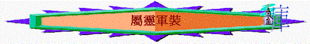

[ Home ] [ 經卷課程 ] [ 查經資料 ] [ 栽培課程 ] [ 事奉培訓 ] [ 聚會資源 ] [ 佈道資源 ] [ 胸懷普世 ] [ 異端異教 ] [ 信息分享 ] [ 專題研究 ] [ 祈禱專題 ] [ 詩歌簡譜 ] [ 動畫之廊 ] [ 輔導關懷 ] [ 站長聯絡 ]
1.穿戴軍裝的原因 2.穿戴軍裝前預備 3.第一裝備:神的大能 4.第二裝備:受苦心志 5.第三裝備:真理帶子 6.第四裝備:公義護心鏡 7.第五裝備:信和愛護心鏡 8.第六裝備:平安福音鞋 9.第七裝備:信心藤牌 10.第八裝備:得救頭盔 11.第九裝備:盼望頭盔 12.第十裝備:聖靈寶劍
Word 版